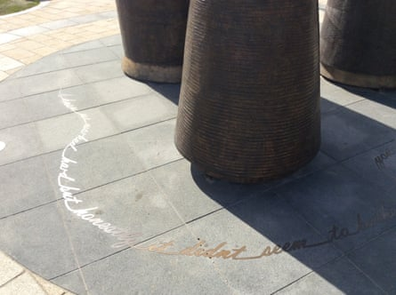

After decades of debate over how to honour the women who used to work in the city’s shirt factories, Derry has produced a sculpture of three giant spools of thread cast in bronze.
Ranging in height from 2 to 3.5 metres (6.5-11.5ft), the monuments loom over Harbour Square to recall an era when thousands of girls and women worked in dozens of factories that made the Northern Irish city a world leader in shirt production.
However, some former workers are aghast and say the decision to use abstract symbols rather than female figures occludes their role from history. “This gesture fell way short of what we hoped for – we feel airbrushed out of it,” Clare Moore told the BBC this week.
Before the official unveiling last month, several former workers staged a protest and held a banner saying “these factory girls say no”. There had been no proper consultation and the bronze spools did not accurately resemble the ones they used in the factories, they said.
Derry city and Strabane district council had hoped the £187,000 design would draw a line under a troubled 20-year stop-start quest to represent the city’s industrial heritage with public art. The council called the artwork a “fitting tribute” and said it had fully engaged with the former workers.
Quotes from former factory shirt workers resemble a thread from one of the spools.Photograph: Chris Wilson
Chris Wilson, the artist behind the sculpture, said at least two years of consultations included a day-long workshop that showed a model of the artwork to dozens of former workers, who at that meeting raised no objections.
“They all seemed onboard with the idea,” Wilson told the Guardian. “I’ve never worked on a project that had such an extensive and transparent process.”
The sculptures are not figurative but “almost anthropomorphic” in suggesting a group of people, with textures and shadows to evoke memory, he said. “The factories are all gone but what came across to me, in talks with the ladies, was their memories and recollections and friendships.”
One of the bronze spools emits what appears to be a loose thread around the base but is in fact quotes from some former workers, Wilson said. “I’ve been told that public art is like sport. Everybody has opinion and is entitled to have an opinion.”